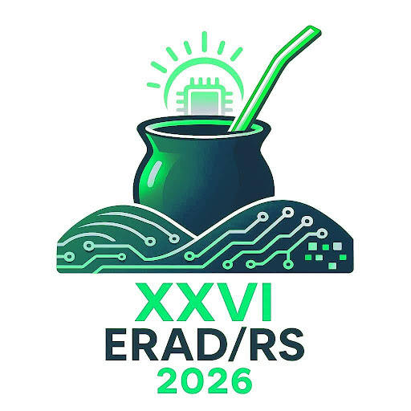
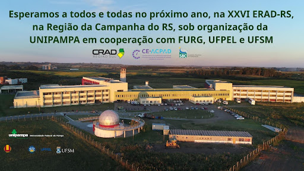

A Escola Regional de Alto Desempenho da Região Sul (ERAD/RS) é um evento consolidado, com 25 anos de trajetória de sucesso, promovido pela Sociedade Brasileira de Computação (SBC), com apoio da Comissão Especial de Arquitetura de Computadores e Processamento de Alto Desempenho (CEACPAD) e da Comissão Regional de Alto Desempenho da Região Sul (CRAD/RS). Reconhecida como referência na área de Processamento de Alto Desempenho (HPC), reúne anualmente pesquisadores, profissionais e estudantes de Instituições de Ensino Superior (IES), de Ensino Básico, Técnico e Tecnológico (EBTT) e outras Instituições Científica, Tecnológica e de Inovação (ICT) dos estados do Rio Grande do Sul, Santa Catarina e Paraná.
Em 2026, o evento será realizado em Bagé-RS, de 6 a 8 de Maio, nas instalações do Campus Bagé da UNIPAMPA, estrategicamente posicionada no bioma Pampa, na Campanha Gaúcha, região de fronteira, o que impulsiona o desafio de engajar instituições envolvidas com HPC nos três países vizinhos (Argentina, Paraguai e Uruguai).
A organização geral da 26a ERAD/RS, assim como em diferentes atividades previstas usualmente na programação de três dias (Fórum de Iniciação Científica, Fórum de Pós-Graduação, Minicursos, Painéis, Maratona de Programação Paralela e Workshop de Mulheres em HPC), complementada por outros espaços para divulgação e networking, conta com a colaboração de coordenadores renomados de instituições dos três estados, enquanto que o apoio local será dado não apenas pela UNIPAMPA, mas também pela FURG, UFPEL e UFSM.
Prof. Dr. Leonardo Pinho (UNIPAMPA) - Prof. Dr. Charles Miers (UDESC) - Prof. Dr. Guilherme Galante (UNIOESTE)
Sociedade Brasileira de Computação (SBC) - Comissão Especial de Arquitetura de Computadores e Processamento de Alto Desempenho (CEACPAD) - Comissão Regional de Alto Desempenho da Região Sul (CRAD/RS)
Universidade Federal do Pampa (UNIPAMPA) - Campus Bagé
Universidade Federal de Pelotas (UFPEL) - Universidade Federal de Rio Grande (FURG) - Universidade Federal de Santa Maria (UFSM) - Embrapa Pecuária Sul (CPPSUL)
